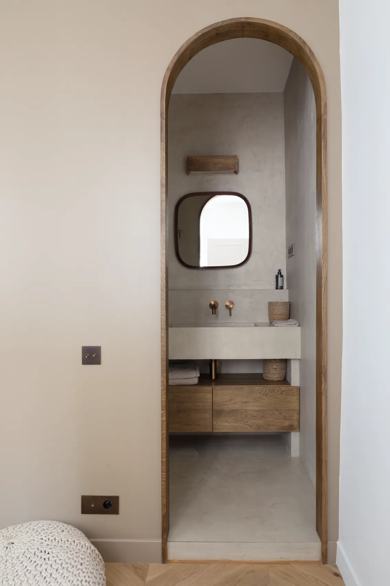
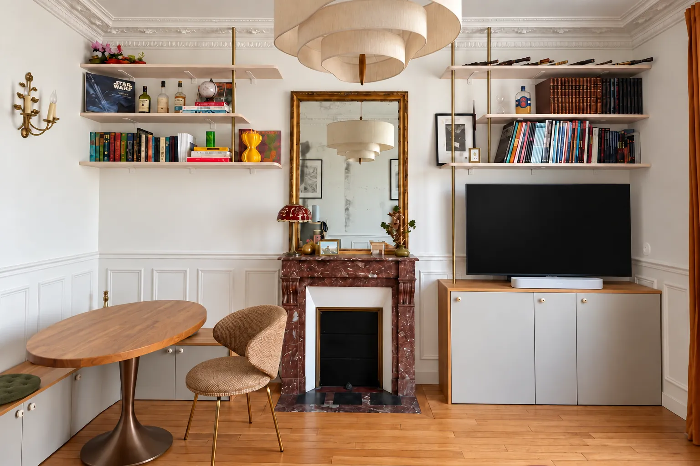

La bonne adresse, à votre image.
Je suis Margaux Stouls, architecte d'intérieur et designer à Paris. Trouver le bon appartement, révéler son potentiel, lui donner du caractère : je vous accompagne à chaque étape, jusqu'au jour où vous posez vos valises.

Réalisations récentes


Deux façons de travailler avec moi
De la recherche à la remise des clés
Pour les clients qui n'ont pas encore trouvé leur bien. Recherche et chasse d'appartement, analyse du potentiel du bien, conception et dossier technique, matériaux, mobilier et décoration, devis définitif, suivi du chantier, aménagement et remise des clés.
Rénovation clé en main d'un bien déjà acquis
Pour les clients qui possèdent déjà leur appartement. Analyse du bien et définition du projet, conception et dossier technique, matériaux, mobilier et décoration, devis définitif, suivi du chantier, aménagement et remise des clés.

Quel que soit le projet
Résidence principale
Vous vivez à Paris, ou vous vous y installez, et vous voulez un appartement redessiné autour de votre quotidien.
Pied-à-terre
Un appartement à vous à Paris pour des séjours réguliers, prêt à vivre dès votre arrivée.
Investissement locatif
Un bien où une nouvelle distribution crée une chambre ou une vraie cuisine, conçu et meublé pour être loué.
Projet destiné à la revente
Un appartement acheté pour être rénové puis revendu, où la conception se juge à la valeur qu'elle ajoute.
Un suivi complet
Une rénovation, ce sont des centaines de petites décisions, une dizaine de corps de métier et un immeuble qui a ses propres règles. Je porte l'ensemble : je prépare les choix, je vous les soumets avec une image et un prix, et je suis les travaux jusqu'à la livraison.
Vous décidez, vous êtes tenu informé, et vous n'avez personne à relancer. L'objectif est de réduire au maximum votre charge mentale, jusqu'à la remise d'un appartement adapté à votre projet.

Les questions que l'on pose en premier
Faut-il que je sois à Paris ?
Non. Les rendez-vous peuvent se tenir en visioconférence, les choix se confirment par WhatsApp, et pendant le chantier vous recevez des comptes rendus, des photos et des visites de l'appartement en vidéo. Quand vous êtes sur place, les rendez-vous ont lieu sur le chantier.
Pouvez-vous intervenir sur un appartement que je possède déjà ?
Oui. C'est l'une des deux formules du studio. Le projet commence alors par l'analyse du bien, puis la conception et le dossier technique.
Faites-vous aussi des rénovations partielles ?
Oui. Une bibliothèque, une cuisine, quelques pièces : le portfolio en montre plusieurs. Dites-moi ce dont vous avez besoin et je vous dirai ce que je peux prendre en charge.
Combien cela coûte-t-il ?
Chaque étape fait l'objet d'un devis écrit avant de commencer. Le devis définitif des travaux est établi une fois le dossier technique finalisé : il chiffre le projet que vous avez validé, et rien d'autre.
Travaillez-vous uniquement à Paris ?
À Paris et dans les communes voisines. Rester proche, c'est ce qui me permet d'être présente sur le chantier.